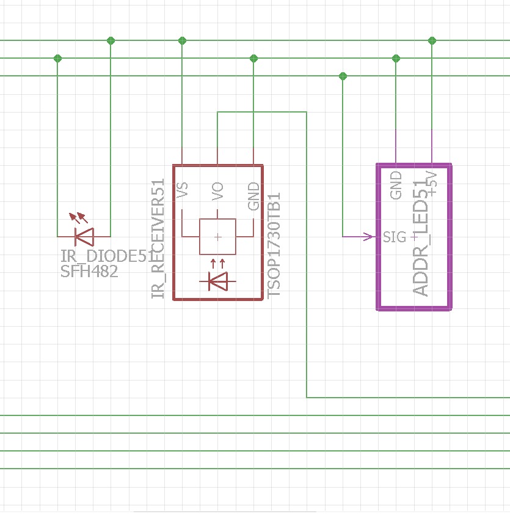
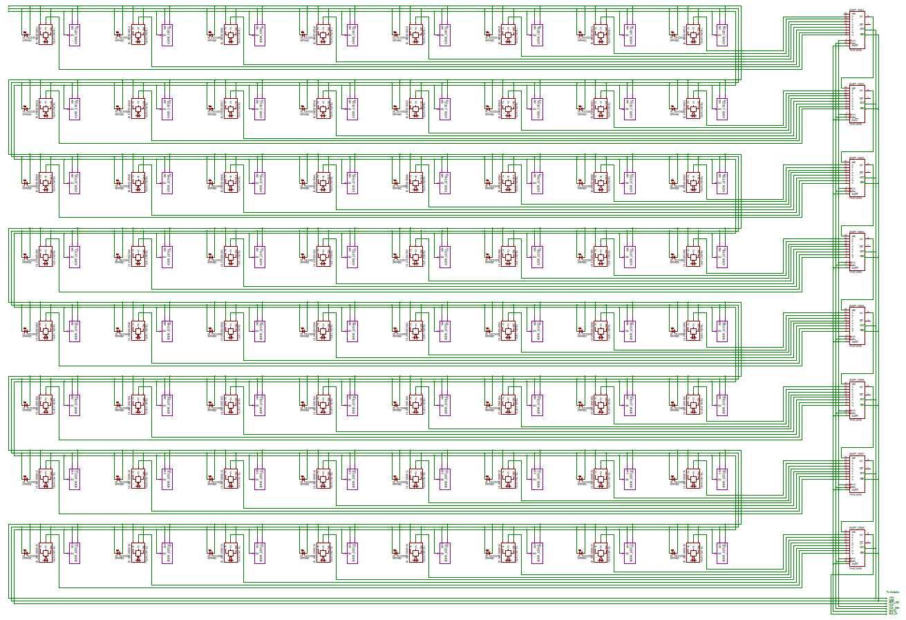

Mindy Wu
Ric Lebre
Henry Cheung
Yijun Jiang
Alyanna Villapando
We want to build a big LED matrix (36x36in) with 64 RGB LEDs that changes color when something touches its surface just like these exemples:
Unit cell (part numbers are randomly selected from Eagle library and may not be our eventual choice)
64 cells altogether
We use eight 8-bit parallel-load shift-in registers (SN74HC165) to read signals from 64 IR sensors.
Datasheet can be found here.
Pins:
#1: SH/LD(bar) [stands for SHift (on HIGH)/LoaD (on LOW)]. When given a LOW, the chip loads data from 8 input pins (A~H: pin #11~14 and pin #3~6); when given a HIGH, the chip is prepared to shift data to the serial output QH (pin #9). By prepared, I mean it still needs to wait for a trigger, which is given by a falling edge of CLK-INH (pin #15).
#2: CLK [stands for CLocK]. After the shift is triggered, a rising edge in CLK shifts the next internal register to the serial output QH (pin #9).
#3~6: Input pins E~H. Inputs are sent into internal registers.
#7: QH(bar): negated serial output.
#8: GND: ground.
#9: QH: serial output.
#10: SER [stands for SERial]: serial input. The data that comes into this pin will be shift before all other pins (no need for a CLK rising edge).
#11~14: Input pins A~D. Inputs are sent into internal registers.
#15: CLK-INH [stands for CLocK-INHibit (on HIGH)]. When given a HIGH, the chip does not shift, in other words, CLK pin does not work; when given a LOW, the chip shifts. So a falling edge in CLK-INH triggers the shift.
#16: Vcc: power supply.